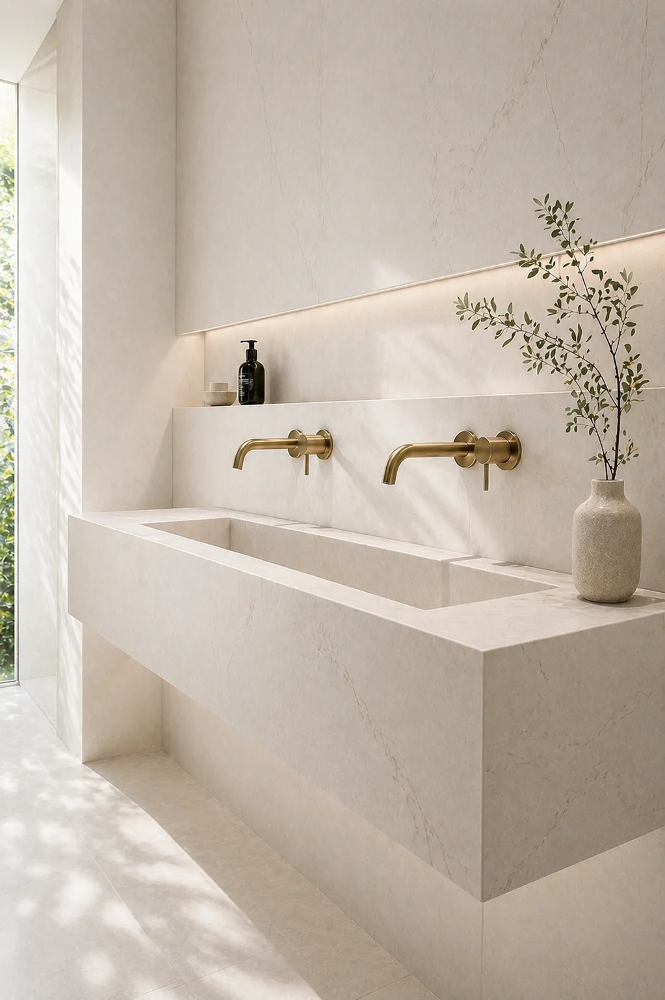

Porcelain Fabrication
Porcelain Fabrication in London
Bespoke porcelain fabrication London projects can use for mitred porcelain sinks, porcelain vanity tops, bathroom surfaces and large-format slab work made to measure.
Each fabricated porcelain detail is planned around dimensions, edge treatment, surface tone, adjoining tiling and the way the piece will be used every day.
Bathrooms
Bespoke Porcelain Fabrication for Bathrooms
Artiling Studio creates bespoke bathroom surfaces London interiors can build around, from fabricated sink pieces and vanity tops to splashbacks, shelves, side returns and adjoining porcelain details.
The work is planned as a connected composition so the porcelain sink, surrounding tiling and large-format surfaces feel resolved rather than assembled from separate parts.
See our recent tiling and porcelain projects, contact the studio or Request a quote for porcelain fabrication in London.
Sink Fabrication
Mitred Porcelain Sinks
Mitred porcelain sinks are shaped around clean edges, precise joins and calm proportions. They can be designed for cloakrooms, long vanity areas, guest bathrooms and refined residential interiors.
Custom porcelain sinks London projects often need are fabricated around width, depth, tap position, waste detail, surface fall and the surrounding bathroom finish.
Vanity Surfaces
Porcelain Vanity Tops and Bathroom Surfaces
Porcelain vanity tops London bathrooms need can be fabricated to align with drawers, wall tiling, mirrors, brassware and splashback details. The aim is a surface that feels architectural and quietly practical.
We consider the visible grain or veining direction, edge thickness, cut-outs, returns and transitions so each piece sits naturally within the wider bathroom.
-
01
Large-Format Slab Cutting and Finishing
Large-format porcelain fabrication for slabs, vanity panels, wall surfaces and feature pieces where careful cutting and edge control matter.
-
02
Made-to-Measure Details
Dimensions, mitres, cut-outs, falls, returns and joins are planned before fabrication so the finished piece feels intentional.
-
03
Connected Surfaces
Sinks, vanity tops and bathroom surfaces can be planned alongside tiling, wet room details and adjoining porcelain finishes.
Fabrication Quote
Request a Porcelain Fabrication Quote
Share dimensions, drawings, photos and the type of porcelain detail you are planning.